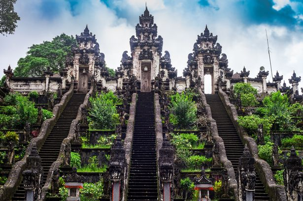
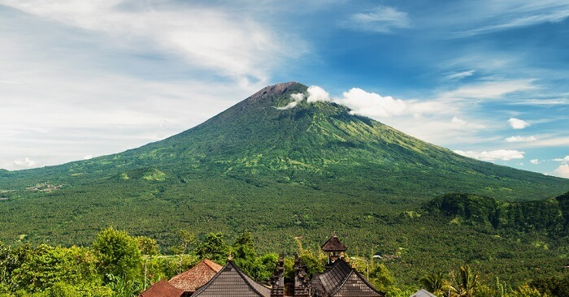
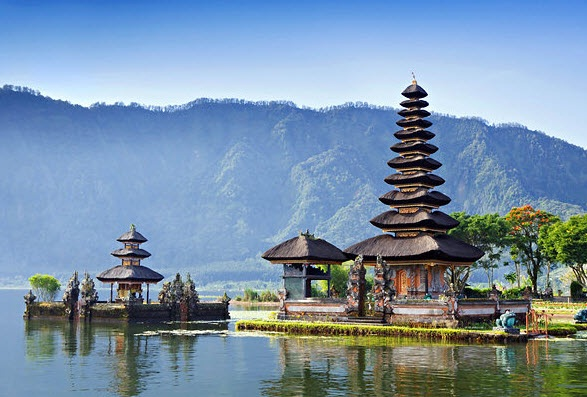
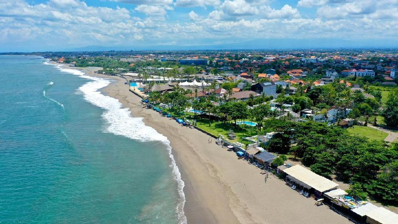

Sejarah

Bali telah dihuni oleh bangsa Austronesia sekitar tahun 2000 sebelum Masehi yang bermigrasi dan berasal dari Taiwan melalui Maritime Asia Tenggara. Budaya dan bahasa dari Orang Bali demikian erat
kaitannya dengan orang-orang dari kepulauan Indonesia, Malaysia, Filipina, dan Oseania. Budaya Bali juga sangat dipengaruhi oleh budaya India, Cina, dan khususnya Hindu, mulai sekitar abad 1 Masehi.
Kata Bali sendiri pertama kali muncul dalam sebuah Prasasti yang ditemukan pada tahun 835 Saka (913 Masehi) di desa Blanjong, Sanur dan berikutnya prasasti ini dikenal dengan Prasasti Blanjong. Di Prasasti yang
dikeluarkan olah raja Sri Kesari Warmadewa ini dituliskan nama pulau Bali dengan sebutan Bali Dwipa, yang merupakan kata jadian dari bahasa Sansekerta yaitu Bali yang berarti persembahan, kembali, atau sesaji, sedangkan kata Dwipa sendiri mempunyai arti pulau.
Geografis

Pulau Bali adalah bagian dari Kepulauan Sunda Kecil sepanjang 153 km dan selebar 112 km sekitar 3,2 km dari Pulau Jawa. Secara geografis, Bali terletak di 8°25′23″ Lintang Selatan dan 115°14′55″ Bujur Timur
yang membuatnya beriklim tropis seperti bagian Indonesia yang lain.
Berdasarkan relief dan topografi, di tengah-tengah Pulau Bali terbentang pegunungan yang memanjang dari barat ke timur dan di antara pegunungan tersebut terdapat gugusan gunung berapi yaitu Gunung Batur dan
Gunung Agung serta gunung yang tidak berapi, yaitu Gunung Merbuk, Gunung Patas dan Gunung Seraya. Adanya pegunungan tersebut menyebabkan Daerah Bali secara Geografis terbagi menjadi 2 (dua) bagian yang tidak sama yaitu Bali Utara dengan dataran rendah yang sempit dan kurang landai dan Bali Selatan dengan dataran rendah yang luas dan landai.
Wisata
Bali adalah primadona pariwisata Indonesia yang sudah terkenal di seluruh dunia. Selain terkenal dengan keindahan alam, terutama pantainya, Bali juga terkenal dengan kesenian dan budayanya yang unik dan menarik. Industri pariwisata berpusat di Bali Selatan dan di beberapa daerah lainnya. Lokasi wisata yang utama adalah Kuta dan sekitarnya seperti
Legian dan Seminyak, daerah timur kota seperti Sanur, pusat kota seperti Ubud, dan di daerah selatan seperti Jimbaran, Nusa Dua dan Pecatu. Bali sebagai tempat tujuan wisata yang lengkap dan terpadu memiliki banyak sekali tempat wisata menarik, antara lain: Pantai Kuta, Pura Tanah Lot, Pantai Padang - Padang, Danau Beratan Bedugul, Garuda Wisnu
Kencana (GWK), Pantai Lovina dengan Lumba Lumbanya, Pura Besakih, Uluwatu, Ubud, Munduk, Kintamani, Amed, Tulamben, Pulau Menjangan dan masih banyak yang lainnya. Kini, Bali juga memiliki beberapa pusat wisata yang sarat edukasi untuk anak-anak seperti kebun binatang, museum tiga dimensi, taman bermain air, dan tempat penangkaran kura-kura.
Berikut beberapa objek wisata yang terkenal di Pulau Bali
Bedugul

Bedugul adalah kawasan pariwisata yang memiliki daya tarik utama pada panorama alam, seperti panorama danau, hutan lindung dan kesejukan udara daerah pegunungan. Tempat wisata utama di Bedugul adalah Pura Ulun Danu Bratan dan Kebun Raya Bali. Kawasan pariwisata Bedugul berada pada bagian tengah pulau Bali yang lokasinya berada berdekatan dengan kawasan danau Beratan. Daerah kawasan pariwisata Bedugul
masuk dalam pemerintahan kabupaten Tabanan. Karena kawasan Bedugul berada di ketinggian 1,500 meter dari permukaan air laut, membuat udara pada siang hari sangat sejuk di daerah Bedugul.
Di kawasan pariwisata Bedugul terdapat tiga danau besar yaitu: Danau Beratan atau sering ditulis danau Bratan, Danau Buyan, dan Danau Tamblingan. Namun dari ketiga danau yang ada di Bedugul, yang paling terkenal sebagai tempat wisata di pulau Bali adalah danau Beratan. Tidak kalah terkenal dengan danau Bratan, sebagai destinasi wisata, kebun Raya Bali yang lokasinya berada di kawasan wisata Bedugul juga selalu ramai dengan kunjungan wisatawan.
Garuda Wisnu Kencana

Taman Budaya Garuda Wisnu Kencana (bahasa Inggris: Garuda Wisnu Kencana Cultural Park), atau kerap disebut dengan GWK, adalah sebuah taman wisata budaya di bagian selatan pulau Bali.
Taman wisata ini terletak di Desa Ungasan, Kecamatan Kuta Selatan, Kabupaten Badung, kira-kira 40 kilometer di sebelah selatan Denpasar, ibu kota provinsi Bali. Di sini berdiri megah sebuah landmark atau maskot Bali, yakni patung Garuda Wisnu Kencana yang menggambarkan sosok Dewa Wisnu menunggangi tunggangannya, Garuda, setinggi 121 meter.
Di kawasan itu terdapat juga Patung Garuda yang tepat di belakang Plaza Wisnu adalah Plaza Garuda di mana patung kepala Garuda setinggi 18 meter ditempatkan. Pada saat ini, Plaza Garuda menjadi titik fokus dari sebuah lorong besar pilar berukir batu kapur yang mencakup lebih dari 4000 meter persegi luas ruang terbuka yang dinamai Lotus Pond.
Pilar-pilar batu kapur kolosal dan monumental di Lotus Pond mencipatakan seni lansekap ruang yang sangat eksotis. Dengan kapasitas ruangan yang mampu menampung hingga 7000 orang, Lotus Pond telah mendapatkan reputasi yang baik sebagai tempat sempurna untuk mengadakan acara besar, baik yang berskala nasional maupun internasional.
Pantai Kuta

Pantai Kuta adalah sebuah tempat pariwisata yang terletak di kecamatan Kuta, sebelah selatan Kota Denpasar, Bali, Indonesia. Daerah ini merupakan sebuah tujuan wisata turis mancanegara dan telah menjadi objek wisata andalan Pulau Bali sejak awal tahun 1970-an. Pantai Kuta sering pula disebut sebagai pantai matahari terbenam (sunset beach)
sebagai lawan dari pantai Sanur. Selain itu, Lapangan Udara I Gusti Ngurah Rai terletak tidak jauh dari Kuta.
Pantai Kuta terkenal memiliki ombak yang bagus untuk olahraga selancar (surfing)[2], terutama bagi peselancar pemula. Selain keindahan pantai, wisata pantai Kuta juga menawarkan berbagai jenis hiburan seperti bar, restoran, pertokoan, restoran, hotel, dan toko-toko kelontong, serta pedagang kaki lima di sepanjang pantai menuju Pantai Legian.